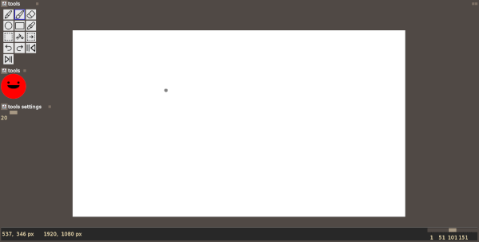

the image editor allows you to create frames for your movie.
when opening the image editor frame, you are given three choices :
after opening an image, you will be presented with a new menu item "editor"
from which you can launch new small frames that allow you to :
here is a preview of an image editor workspace :
tip : hover over a tool to learn its name